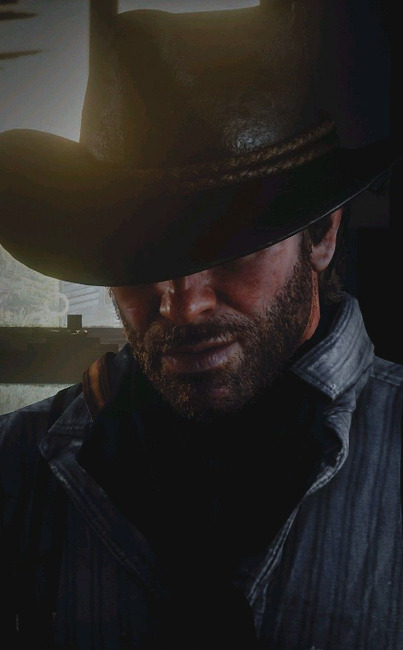
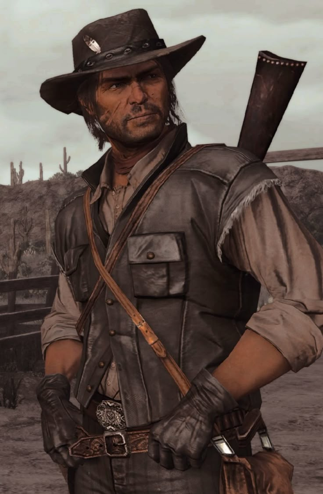
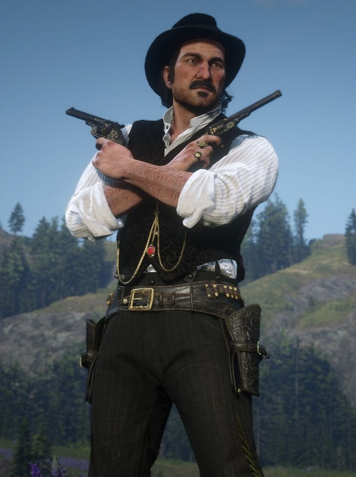
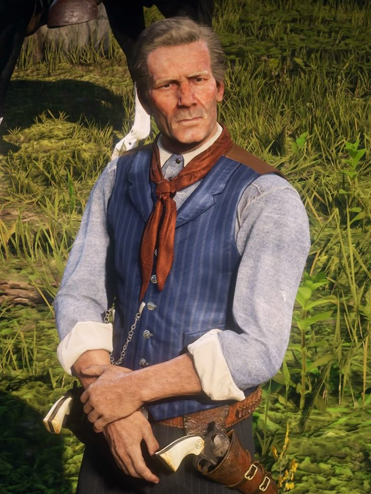
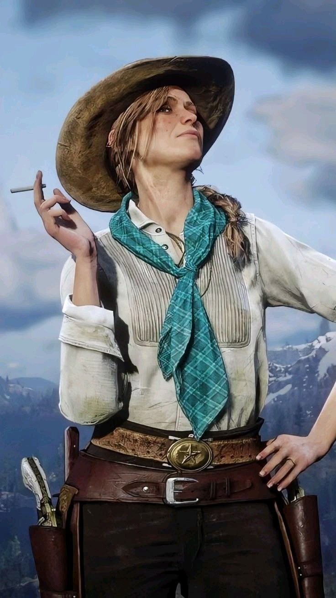
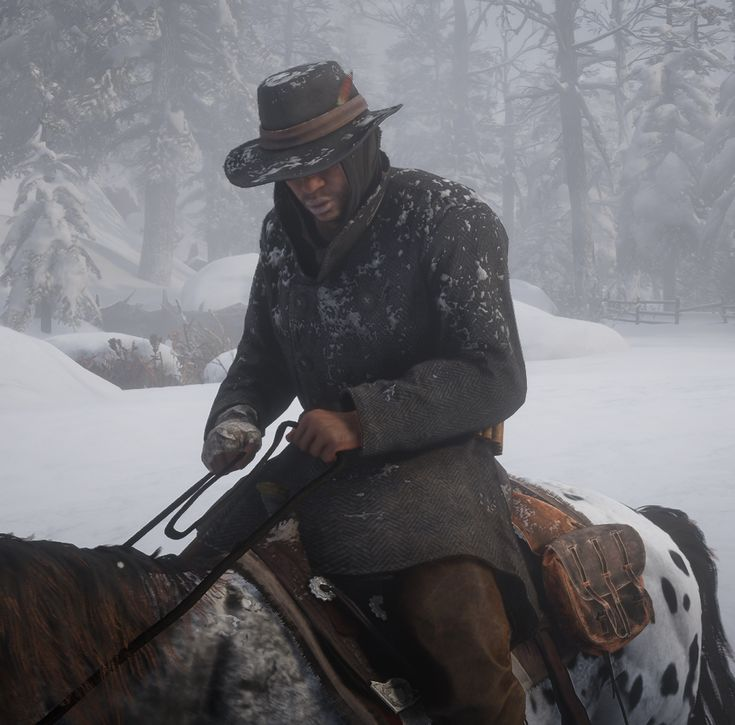
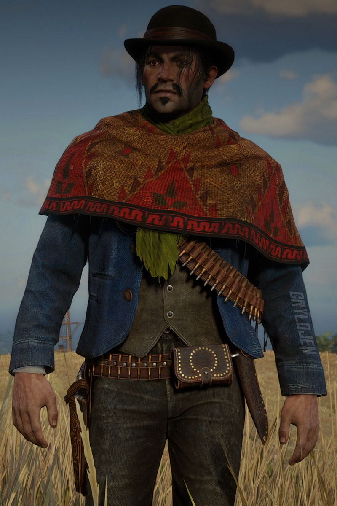
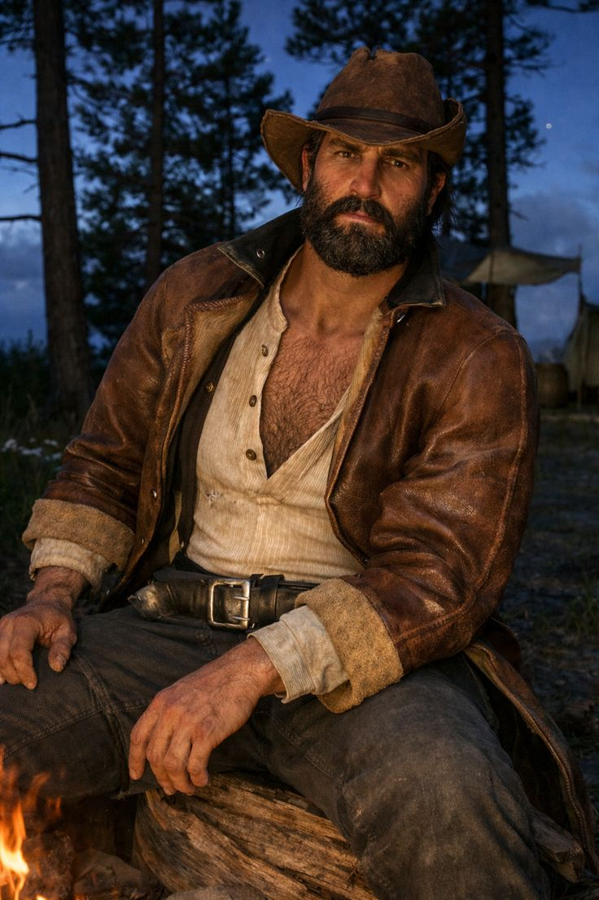
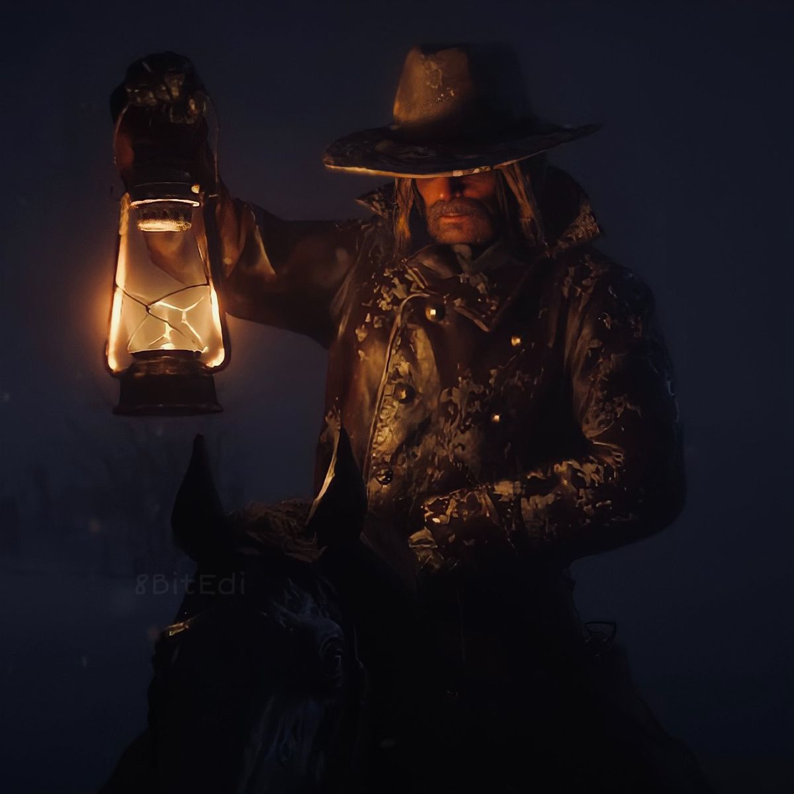

Conoce a los personajes principales y secundarios de Red Dead Redemption II. Cada uno tiene su propia historia dentro de la banda Van der Linde.

Protagonista del juego. Forajido leal a la banda, pero con una lucha interna sobre su moral.

Miembro importante de la banda que intenta construir una nueva vida fuera del crimen.

Líder carismático de la banda, cuyos ideales empiezan a volverse peligrosos.

Consejero de Dutch y figura de sabiduría dentro de la banda.

Una mujer fuerte que busca venganza tras perder a su esposo.

Guerrero tranquilo y hábil, con gran sentido de la justicia.

Forajido mexicano leal a Dutch y experto en combate.

Miembro impulsivo de la banda con tendencia a la violencia.

Antagonista principal dentro de la banda. Traicionero y peligroso.